1:54:40 · 29 OPERE
Seminari tematici: incontro introduttivo.
Il filo del discorso
L’incontro inaugura un ciclo di seminari tematici con una domanda condivisa: perché è diventato difficile sostenere un discorso razionale? Il conduttore e diversi partecipanti propongono risposte differenti, talvolta in disaccordo. Uno richiama il narcisismo attraverso Freud; altri insistono sulla perdita del pensiero critico, del senso del limite o di una dimensione spirituale. Il conduttore riporta la questione alla relazione fra soggetto, realtà, ragioni ed etica. Le categorie cliniche usate nella conversazione hanno soprattutto una funzione polemica o metaforica: non consentono di diagnosticare persone o intere popolazioni. La trascrizione non assegna con affidabilità ogni intervento a una persona; il nome Antonio compare, ma non permette di identificare tutti i turni. Il primo percorso riguarda la verità. Sapere e credere di sapere vengono distinti attraverso esempi quotidiani, linguaggio religioso e fiducia nell’autorità scientifica. La domanda di Pilato a Gesù introduce il rapporto fra verità e potere; l’apertura della Repubblica permette al conduttore di proporre una lettura simbolica dell’incontro fra Socrate, politica e forza. Occorre però distinguere interpretazione e citazione: Socrate racconta di essere sceso al Pireo, mentre la domanda di Pilato non riceve nel Vangelo la risposta costruita con l’anagramma latino. Anche la formula adaequatio rei et intellectus appartiene alla tradizione scolastica latina, pur richiamando problemi aristotelici; non è una frase latina pronunciata da Aristotele. Il tema comune è se differenze di prospettiva implichino necessariamente verità incompatibili. L’ampia digressione matematica e scientifica mette in rapporto infinito, paradossi, previsione e limiti della conoscenza. La scena di Star Trek sull’ultima cifra di pi greco e l’albergo di Hilbert servono a mostrare la distanza fra intuizione e definizioni. Due insiemi numerabili infiniti possono essere disposti nelle posizioni pari e dispari: non si annullano e non diventano zero. La discussione dell’indeterminazione quantistica, della formazione statistica di una figura d’interferenza e dell’incompletezza di Gödel riguarda limiti diversi, non un unico teorema universale sull’impossibilità di conoscere. L’assenza di certezza sul singolo esito non elimina la verificabilità delle distribuzioni; i teoremi logici hanno condizioni precise e non affermano che ogni sistema sia incompleto semplicemente perché contiene più operatori. Anche pseudocasualità algoritmica e generazione fisica di casualità vanno tenute distinte. Su questo sfondo il gruppo discute la tecnica. Un partecipante la descrive come protesi della volontà; il conduttore segnala di non condividere interamente quella formulazione. Telefoni, calcolatrici e risposte immediate diventano esempi di trasformazione delle abitudini cognitive e dell’attesa temporale. Matrix, Postman e la Dialettica dell’illuminismo sostengono una critica della cultura organizzata come intrattenimento. La conversazione passa poi alla dignità del lavoro: il conduttore contesta l’idea che una professione possa essere intrinsecamente umile rispetto a un’altra. Le differenze di formazione e di competenza non devono trasformarsi in una gerarchia della dignità personale. La critica dell’industria culturale comprende media, libri, scuola e università. Eco, Benda, Schopenhauer e Schweitzer sono richiamati per discutere chi viene ascoltato e chi rimane ai margini. Gli interlocutori denunciano conformismo, vincoli nei finanziamenti e povertà della formazione; tali giudizi non dimostrano da soli un progetto unitario di controllo né ogni accusa personale pronunciata. Il richiamo al manifesto Russell–Einstein richiede di separare il documento del 1955 dall’impegno antinucleare di Schweitzer, che non ne è firmatario. Anche la genealogia della scuola prussiana precede Bismarck: il decreto scolastico del 1763 impedisce di attribuirgli l’invenzione dell’intero sistema. Prezzi, qualità della carta e concentrazione editoriale sono discussi come aspetti dell’accesso ai testi; la normativa europea evocata non è identificata in modo sufficiente per confermare il nesso causale proposto. Le parentesi su pandemia, scienziati televisivi e conflitto in Medio Oriente restano valutazioni dei singoli interlocutori. Il confronto fra scenari epidemiologici e dati osservati richiede condizioni, interventi, tempi e popolazioni comparabili: non basta citare un paese diverso per confutare un modello. L’impressione personale di sentire più ambulanze non misura un aumento statistico né ne identifica la causa. Nel discorso sul Medio Oriente, critica di decisioni statali, responsabilità di Hamas e identità delle persone palestinesi sono piani distinti. L’asserita assenza di una formula nei giornali italiani anteriori agli anni Sessanta non dimostra l’inesistenza di una popolazione o delle sue rivendicazioni: documenti ONU del 1947 attestano sia rappresentanze arabe palestinesi sia l’espressione Palestinian people, usata in una proposta di cittadinanza comune araba ed ebraica. La storia delle identità e quella delle denominazioni richiedono un’indagine, non una scorciatoia lessicale. Una sequenza specifica riguarda Derek Parfit. Il conduttore critica un suo intervento alla Oxford Union e l’inizio di Reasons and Persons, richiamando il paragone con il gatto. Il contesto dell’introduzione distingue subito l’agire seguendo un desiderio dall’esaminare ragioni per agire: non offre come norma etica il fare qualunque cosa si voglia. L’aneddoto biografico sul gatto non è verificato, e l’aspetto del conferenziere non confuta le sue tesi. Un partecipante propone quindi il Pluto di Aristofane come lettura dell’aspettativa di salvezza attraverso la ricchezza, cui viene aggiunto I cavalieri. L’Iliade è letta come avvertimento sul costo delle passioni: il ritorno di Achille al dialogo con Agamennone appartiene al libro XIX e conserva memoria della disputa, non un semplice oblio del motivo originario. Il percorso si chiude sul nesso fra sapere, previsione, sopravvivenza e responsabilità politica. Euclide rappresenta il valore della costruzione razionale, pur non essendo l’autore del primo testo matematico della storia. Il De tyranno di Bartolo è raccomandato per discutere bene comune e abuso del potere; Cincinnato e Washington sono evocati come esempi di rinuncia personale, senza trasformare il paragone in un meccanismo istituzionale già risolto. Rimane aperta la distanza fra formulare un ideale e renderlo praticabile. Il programma concordato per l’incontro successivo è tornare alla verità, approfondendone le dimensioni ontologica, cognitiva ed epistemica.
I libri nel discorso
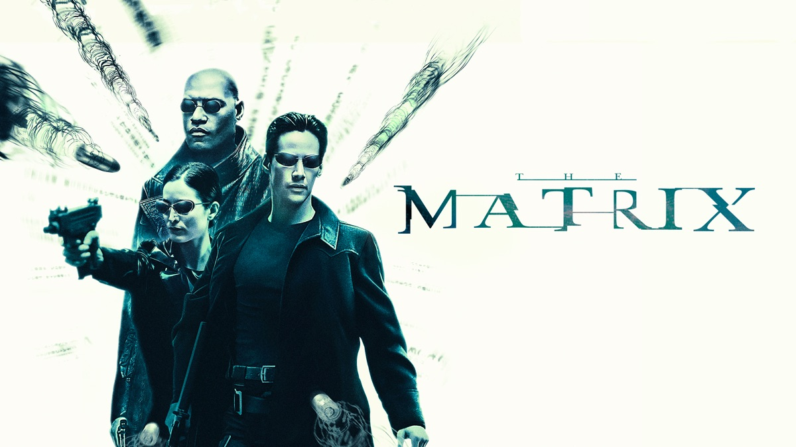
Matrix (The Matrix,1999)
Locandina del film Matrix 1999 dal catalogo digitale: Film 1999, regia di Lana e Lilly Wachowski, Keanu Reeves, Laurence Fishburne, Carrie-Anne Moss. Locandina orizzontale del catalogo digitale, non copertina narrativa o fotogramma della specifica scena citata.
Visti interamente titolo e personaggi Neo, Morpheus, Trinity. Immagine dalla pagina del film del 1999; non identifica una specifica edizione DVD.
Riferimento ricavato dalla trascrizione automatica.
Passaggio 7:03 ↗ · Fonti e libro ↗
Vangelo secondo Giovanni
Copertina del volume completo: San Paolo, 2014 · Nuova Versione dai Testi Antichi · edizione di riferimento
Vangelo secondo Giovanni è un libro della Bibbia. L’immagine mostra il volume completo San Paolo di riferimento, non un’edizione autonoma del singolo libro e non una versione identificata nella citazione.
Riferimento ricavato dalla trascrizione automatica.
Passaggio 12:11 ↗ · Fonti e libro ↗
La Repubblica
Copertina: Laterza · La Repubblica · edizione con testo a fronte di riferimento
Immagine associata all’ISBN di riferimento e controllata visivamente; edizione e traduzione non identificate come quelle citate o lette nel video.
Riferimento ricavato dalla trascrizione automatica.
Passaggio 13:01 ↗ · Fonti e libro ↗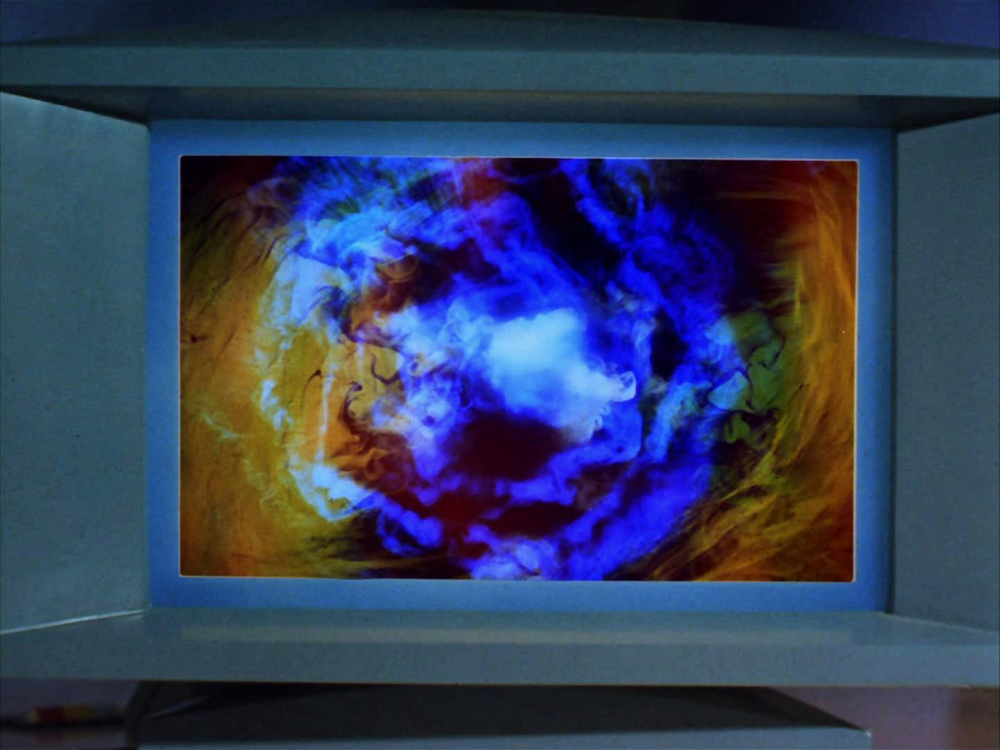
Wolf in the Fold (Star Trek: The Original Series, S2E14)
Identificazione probabile
Still di Wolf in the Fold, credito Star Trek.com: Still editoriale specifico di Wolf in the Fold (Star Trek: The Original Series, stagione 2 episodio 14, 1967), pubblicato da Star Trek.com nella sezione Redjac. Credito Star Trek.com; non copertina di libro, logo della serie o scena certificata del calcolo di pi.
La didascalia e i metadati del sito ufficiale associano direttamente questa immagine all’episodio. La versione digitale dello still non è qui identificata come riproduzione della prima trasmissione o remaster. Nessuna visione integrale dell’episodio o collazione con fotogrammi del seminario viene dichiarata.
A 04 s: Star Trek, personaggio riconoscibile come Spock (Spark nella trascrizione automatica), computer e richiesta dell’ultima cifra di pi. Titolo non pronunciato. La diapositiva 61 della conferenza Rycroft 2019 attribuisce la stessa richiesta a Spock nell’episodio Wolf in the Fold; la scheda ufficiale Paramount lo registra S2E14.
Passaggio 21:42 ↗ · Fonti e libro ↗
Star Trek: The Original Series
Identificazione probabile
Immagine ufficiale della serie · Kirk e Spock: Immagine promozionale ufficiale di Star Trek.com: Kirk e Spock davanti al Guardian of Forever. È un fotogramma usato dalla pagina della serie, non una copertina libraria, una locandina d’epoca o l’episodio a cui attribuire l’esperimento inventato dal relatore.
Immagine autentica dell’opera, controllata visivamente; l’edizione di riferimento non è attribuita al filmato.
Riferimento ricavato dalla trascrizione automatica.
Passaggio 21:43 ↗ · Fonti e libro ↗
La società del contrario
Copertina: Zambon · 2005
Copertina autentica dell’edizione di riferimento, controllata visivamente. Non identifica l’esemplare letto o citato nel video.
Riferimento ricavato dalla trascrizione automatica.
Passaggio 42:38 ↗ · Fonti e libro ↗
Dialettica dell’illuminismo
Copertina: Einaudi, Piccola Biblioteca Einaudi, 2010
Edizione illustrativa dell'opera, con traduzione di Renato Solmi e introduzione di Carlo Galli; non identificata nel video.
Riferimento ricavato dalla trascrizione automatica.
Passaggio 43:10 ↗ · Fonti e libro ↗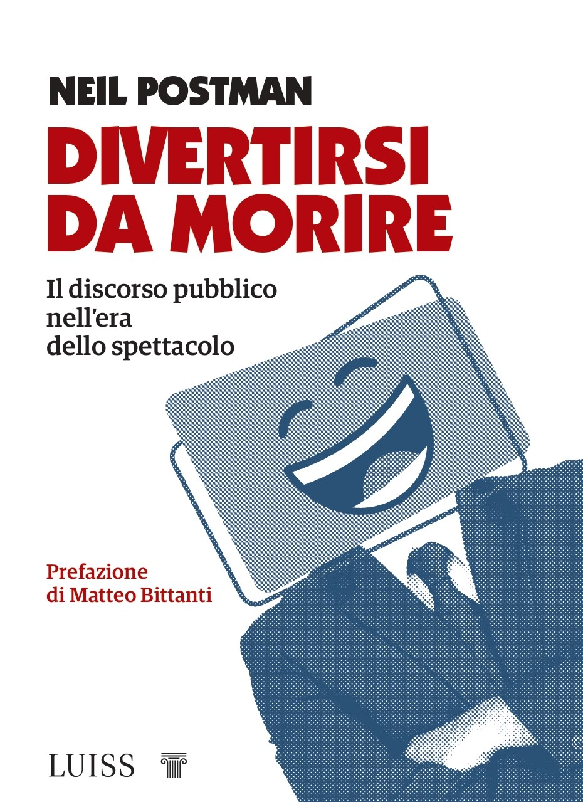
Divertirsi da morire. Il discorso pubblico nell’era dello spettacolo
Copertina: Luiss University Press · 2021 · prefazione di Matteo Bittanti
Immagine autentica dell’opera, controllata visivamente; non identifica l’edizione usata nel video.
Riferimento ricavato dalla trascrizione automatica.
Passaggio 44:02 ↗ · Fonti e libro ↗La scomparsa della realtà. Antologia di scritti
Copertina: La scomparsa della realtà. Antologia di scritti, Fausto Lupetti Editore: copertina pubblicata sulla pagina editoriale dell’opera. L’edizione italiana è catalogata dall’editore nel 2009; la pagina attuale ha etichetta eBook e informazioni aggiuntive anche cartacee. Nessuna copia o specifico formato identificati nel video.
Raccolta italiana di scritti scelti da opere di Baudrillard, distinta dai singoli originali francesi e da Simulacres et simulation. Immagine originale JPEG 200 × 308, senza modifiche. Non si assegna ISBN del formato cartaceo o digitale dalla sol’immagine.
Nel passaggio: il nome di Baudrillard è trascritto imperfettamente Bodriar; subito dopo viene nominato un libro La scomparsa della realtà e il discorso prosegue su apparenza e intrattenimento. Titolo breve esplicito nella trascrizione automatica; sottotitolo e dati editoriali dal riscontro dell’editore.
Passaggio 47:08 ↗ · Fonti e libro ↗
Il mondo come volontà e rappresentazione
Identificazione probabile
Copertina: Newton Compton · edizione di riferimento
Riferimento ricavato dalla trascrizione automatica.
Passaggio 49:43 ↗ · Fonti e libro ↗
Costituzione della Repubblica Italiana
Copertina dell’edizione Intra aggiornata al 2023: Intra · 2023 · introduzione di Umberto Vincenti
Copertina autentica del testo integrale, aggiornata alla legge costituzionale 26 settembre 2023 n.1. È successiva al filmato del 2019 e non rappresenta la versione storica letta dal relatore. Umberto Vincenti firma l’introduzione.
Riferimento ricavato dalla trascrizione automatica.
Passaggio 55:15 ↗ · Fonti e libro ↗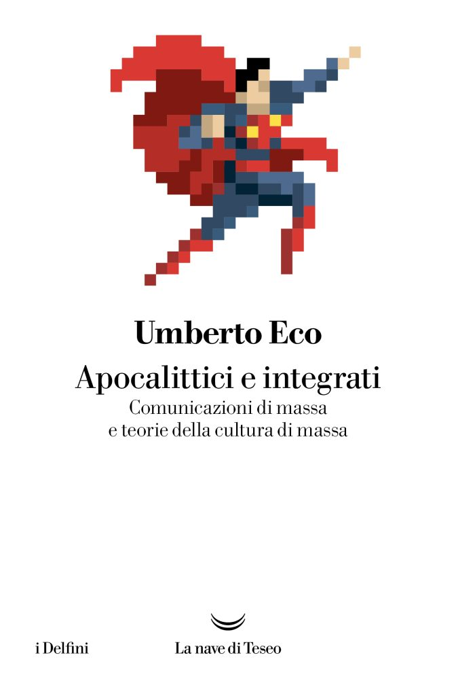
Apocalittici e integrati
Copertina: La nave di Teseo, I delfini, 2025; opera originariamente pubblicata nel 1964.
Immagine autentica dell’opera, controllata visivamente; l’edizione di riferimento non è attribuita al filmato.
Riferimento ricavato dalla trascrizione automatica.
Passaggio 55:58 ↗ · Fonti e libro ↗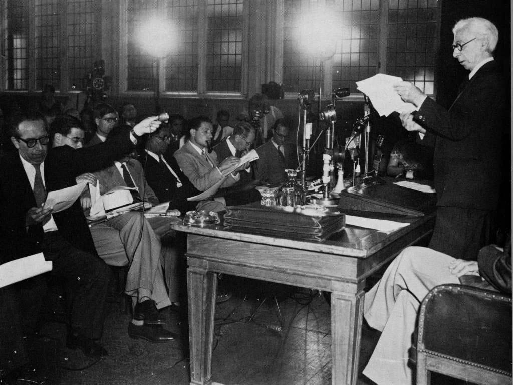
Manifesto Russell–Einstein
Fotografia della presentazione del manifesto nel 1955: Pugwash · documento del 9 luglio 1955 · fotografia della presentazione alla stampa
Fotografia della conferenza stampa del 1955 pubblicata da Pugwash a corredo della storia del manifesto. È un’illustrazione documentaria, non una copertina né una pagina del testo.
Riferimento ricavato dalla trascrizione automatica.
Passaggio 57:18 ↗ · Fonti e libro ↗
University, Inc.: The Corporate Corruption of Higher Education
Identificazione probabile
Copertina: Basic Books, brossura del 22 agosto 2006, ISBN 9780465090525, con una nuova introduzione dell’autrice. Prima edizione del 2005; il catalogo Wellcome registra il sottotitolo The Corporate Corruption of American Higher Education.
Immagine autentica dell’opera, controllata visivamente; l’edizione di riferimento non è attribuita al filmato.
Il passaggio citato nomina Washburn e trascrive il titolo foneticamente come Universi di Inca. La combinazione autore e titolo sostiene il rinvio a University, Inc.; il successivo commento riguarda interessi economici nella ricerca. Riscontro editoriale Basic Books/Hachette del titolo e dell’autrice.
Passaggio 58:50 ↗ · Fonti e libro ↗
Pentagon Papers (Report of the Office of the Secretary of Defense Vietnam Task Force)
Prima pagina del fascicolo introduttivo e indice: Rapporto finale del 1969 · fascicolo introduttivo e indice · scansione NARA declassificata nel 2011
Prima pagina del fascicolo introduttivo e indice conservato dai National Archives; non è la copertina di un libro e non riproduce l’intero rapporto. La voce riguarda il corpus documentario.
Riferimento ricavato dalla trascrizione automatica.
Passaggio 59:47 ↗ · Fonti e libro ↗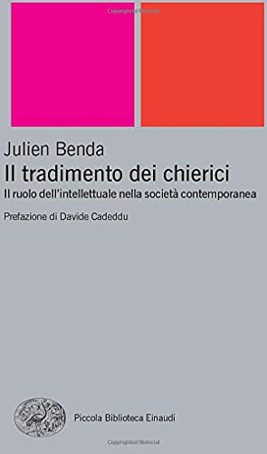
Il tradimento dei chierici (La trahison des clercs)
Copertina: Einaudi · Piccola biblioteca Einaudi · 2012 · prefazione Davide Cadeddu · ISBN 9788806191184
Copertina autentica dell’edizione Einaudi 2012: autore, titolo, sottotitolo Il ruolo dell’intellettuale nella società contemporanea, prefazione Davide Cadeddu e collana sono leggibili. Copertina dell’edizione indicata dall’ISBN, coerente con i dati editoriali della prefazione. Non è attribuita all’esemplare usato nel video.
Riferimento ricavato dalla trascrizione automatica.
Passaggio 1:10:18 ↗ · Fonti e libro ↗Introduzione alla psicoanalisi (Vorlesungen zur Einführung in die Psychoanalyse, 1916–1917)
Copertina: Sigmund Freud Gesamtausgabe, Band 15 (1916–1917), Christfried Tögel, Psychosozial 2020, ISBN 9783837924152
Copertina autentica del volume 15 della Gesamtausgabe, che l’editore dichiara contenere il ciclo originario delle Vorlesungen. Titolo della raccolta e anni 1916–1917 leggibili. Non copertina autonoma dell’edizione italiana ricordata, non volume delle lezioni 1933; la relazione di volume contenente è dichiarata.
Riferimento ricavato dalla trascrizione automatica.
Passaggio 1:13:32 ↗ · Fonti e libro ↗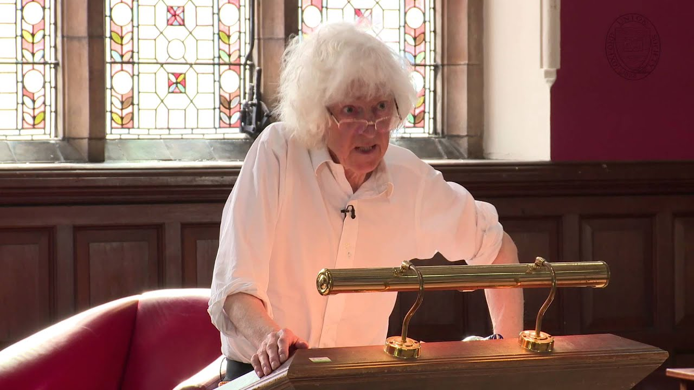
Derek Parfit – Full Address (Oxford Union)
Identificazione probabile
Copertina: Miniatura originale del video ufficiale Oxford Union, pubblicazione online 10 ottobre 2015
Immagine autentica fornita dal canale: Parfit davanti al leggio nell’aula della Oxford Union. Miniatura documentaria del video, non copertina di libro o prova delle valutazioni polemiche. Non ricostruisce graficamente il suo aspetto e non stabilisce il giorno dell’incontro.
Riferimento ricavato dalla trascrizione automatica.
Passaggio 1:19:38 ↗ · Fonti e libro ↗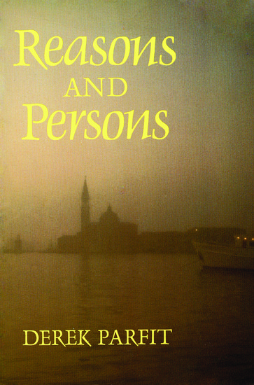
Reasons and Persons
Copertina: Oxford University Press, ISBN 9780198249085: prima edizione paperback corretta 1986; tiratura dell’immagine non certificata, opera originaria 1984
Copertina autentica fornita da OUP: titolo, autore e veduta veneziana leggibili. È l’edizione paperback della stessa opera, non la prima edizione rilegata del 1984; la copia usata nel seminario non è identificata.
Riferimento ricavato dalla trascrizione automatica.
Passaggio 1:21:53 ↗ · Fonti e libro ↗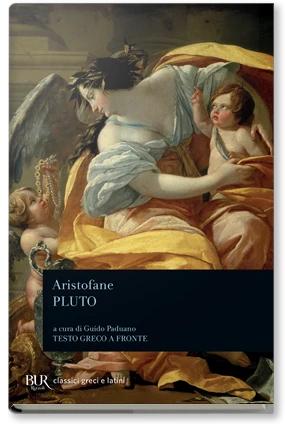
Pluto (Ploutos; Wealth)
Copertina: BUR, 29 gennaio 1988, a cura di Guido Paduano, testo greco a fronte, ISBN 9788817166478
Copertina autentica fornita da Rizzoli, con Aristofane, titolo Pluto e curatore leggibili; testo greco a fronte. È un’edizione di riferimento della commedia, non un libro su Plutone, non la favola di Fedro. Nessuna edizione concreta pronunciata nel seminario. La data 1988 è la pubblicazione editoriale della referenza ISBN; la singola tiratura della copertina web non è certificata.
Riferimento ricavato dalla trascrizione automatica.
Passaggio 1:24:22 ↗ · Fonti e libro ↗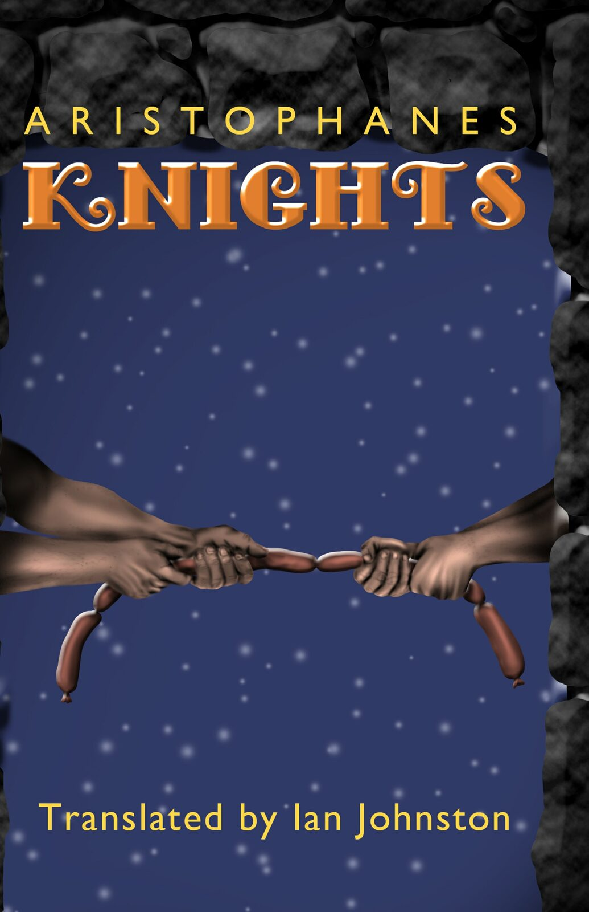
I cavalieri
Copertina: Knights, Richer Resources Publications, traduzione inglese di Ian Johnston, ISBN paperback 9781935238744. Copertina blu, nera e oro con due mani che tirano una fila di salsicce. Edizione inglese di riferimento, non identificata come esemplare del relatore.
Immagine autentica dell’opera, controllata visivamente; l’edizione di riferimento non è attribuita al filmato.
Riferimento ricavato dalla trascrizione automatica.
Passaggio 1:24:53 ↗ · Fonti e libro ↗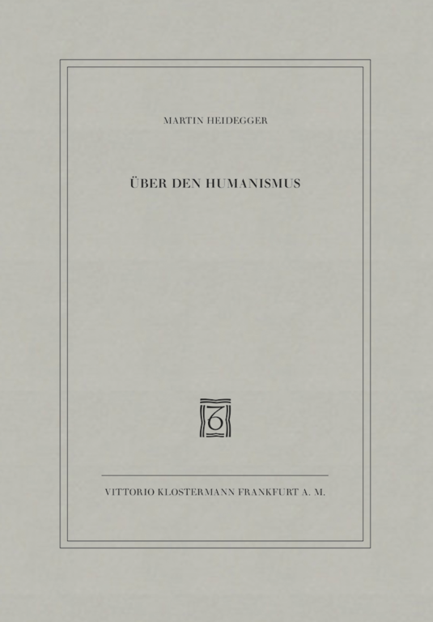
Lettera sull’umanismo (Brief über den Humanismus; Über den Humanismus)
Copertina: Vittorio Klostermann, 11ª edizione 2010, ISBN 9783465040910
Copertina autentica dell’editore: Martin Heidegger, Über den Humanismus e marchio Klostermann leggibili. Non copertina della pubblicazione collettiva del 1947, non un altro saggio; edizione non identificata nel seminario.
Riferimento ricavato dalla trascrizione automatica.
Passaggio 1:27:17 ↗ · Fonti e libro ↗
Iliade
Copertina: Einaudi · ET Classici · 2014
Copertina autentica dell’edizione di riferimento, controllata visivamente. Non identifica l’esemplare letto o citato nel video.
Riferimento ricavato dalla trascrizione automatica.
Passaggio 1:28:08 ↗ · Fonti e libro ↗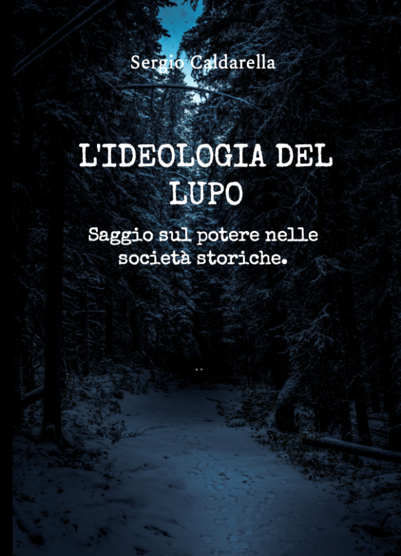
L’ideologia del lupo
Copertina: Presentazione dell’autore, 2024
Riferimento ricavato dalla trascrizione automatica.
Passaggio 1:37:05 ↗ · Fonti e libro ↗
Thought Reform and the Psychology of Totalism. A Study of “Brainwashing” in China
Identificazione probabile
Copertina: University of North Carolina Press · ristampa 1989 con nuova prefazione
Copertina autentica scaricata dal servizio immagini collegato direttamente al catalogo UNC Press per ISBN 9780807842539. Titolo completo, autore e nuova prefazione sono visibili. Si distingue la ristampa cartacea 1989 dalla prima Norton 1961 e dall’ebook 2012 ISBN 9780807882887; quest’ultimo ISBN non è assegnato all’immagine cartacea. Immagine conservata intera.
Riferimento ricavato dalla trascrizione automatica.
Passaggio 1:39:55 ↗ · Fonti e libro ↗
L’ultima dea d’Occidente. Saggio sulla razionalità inesorabile
Foto parziale del volume mostrato a 2054 s; edizione non determinata: Fotogramma nativo intero del volume mostrato nel filmato Zbigniew Brzezinski: La grande scacchiera, a 2054 secondi. Titolo L’ultima dea d’Occidente e autore Dr Divago leggibili sulla coperta; mani nella parte inferiore e bordo inferiore del volume fuori dall’inquadratura. Fotografia parziale del libro nel suo contesto, non una copertina editoriale autonoma, frontespizio o ricostruzione. Sottotitolo, anno, editore e ISBN non leggibili; specifica edizione non determinata.
Il titolo esteso Saggio sulla razionalità inesorabile e il 2018 provengono dalla bibliografia aggiornata dell’autore, non da questo fotogramma o da colophon.
A 6078,61 s il parlante richiama come proprio testo L’ultima dea d’Occidente e lo collega a una modifica antropologica dovuta alla tecnica. Titolo breve e autocitazione espliciti nella trascrizione automatica; sottotitolo e anno non pronunciati nel passo.
Passaggio 1:41:18 ↗ · Fonti e libro ↗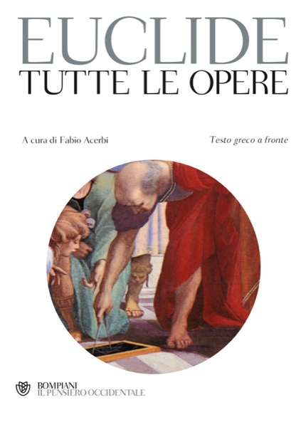
Gli elementi
Copertina: Bompiani · Tutte le opere, raccolta contenente Gli elementi
La copertina illustra la raccolta Tutte le opere, che include Gli elementi; non è attribuita al video.
Riferimento ricavato dalla trascrizione automatica.
Passaggio 1:44:49 ↗ · Fonti e libro ↗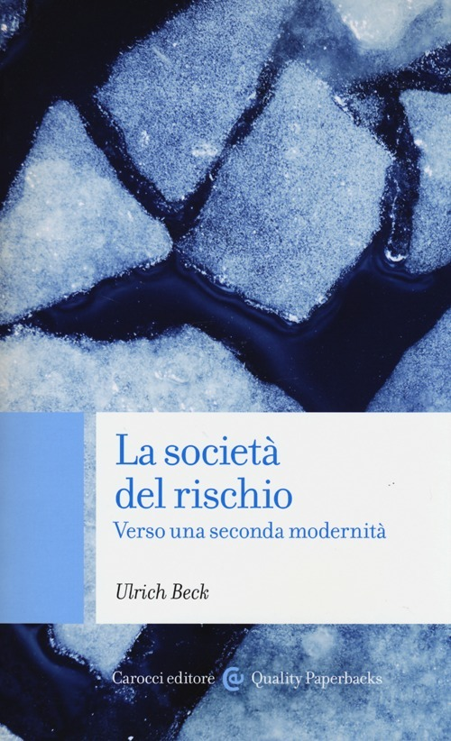
La società del rischio. Verso una seconda modernità
Identificazione probabile
Copertina: Carocci · Quality paperbacks · 2013 e ristampe
Copertina autentica dell’edizione di riferimento, controllata visivamente. Non identifica l’esemplare letto o citato nel video.
Riferimento ricavato dalla trascrizione automatica.
Passaggio 1:46:39 ↗ · Fonti e libro ↗De tyranno (Trattato sulla tirannide)
Copertina: Il Formichiere, testo latino a fronte, cura Dario Razzi, prefazione Diego Quaglioni, traduzione Attilio Turrioni; prima italiana 2017, scheda corrente 3ª edizione febbraio 2021
Copertina autentica fornita dall’editore: autore, titolo, curatore, prefatore e traduttore leggibili. Non il successivo volume di saggi Bartolo da Sassoferrato e il Trattato sulla tirannide. La tiratura dell’immagine non è distinta dai soli metadati web e non identifica la copia del partecipante.
Riferimento ricavato dalla trascrizione automatica.
Passaggio 1:49:13 ↗ · Fonti e libro ↗